HTML Dasar dan Lanjutan
headings, paragraph, formatting, fonts, Links, Images, Iframe
Struktur HTML
Struktur HTML merupakan gambaran dari tampilan dalam sebuah web.
Struktur ini digunakan untuk mengatur semua elemen yang akan muncul pada browser.
Dalam sebuah elemen html, diperlukan tag pembuka dan tag penutup agar elemen tersebut dapat dimengerti oleh komputer dan muncul pada browser.
Berikut merupakan
gambar struktur HTML :
Dari gambar struktur HTML diatas, kita mengetahui terdapat bagian DOCTYPE, lalu bagian head, dan bagian body.
Tapi fungsi dari bagian-bagian itu apa saja ?
Tag DOCTYPE
Bagian tag DOCTYPE berfungsi untuk memberitahu web tentang aturan penulisan
yang kita gunakan pada sebuah dokumen sehingga komputer dapat mengetahui dan
mengelola informasi yang ktia berikan sehingga kita dapat membuat file HTML.
Tag HTML
Bagian tag HTML berfungsi untuk membuat halaman HTML dengan mencakup semua konten
dan elemen yang akan digunakan sehingga komputer dapat menampilkan konten dan elemen yang kita
masukan dalam sebuah file HTML.
Tag Head
Bagian tag Head merupakan bagian yang paling atas pada sebuah file HTML atau bagian ini dapat disebut sebagai
"Kepala" dalam sebuah file HTML. Bagian ini berfungsi untuk memberikan keterangan/informasi terkait file HTML kita.
-
Tag Body
Bagian tag Body merupakan bagian isi dari sebuah file HTML atau bagian ini dapat disebut sebagai "Badan" dari sebuah file HTML.
Bagian ini berfungsi untuk menampilkan informasi/dokumen yang akan ditampilkan pada sebuah website.
Tips : Untuk mempercepat pembuatan struktur HTML, kita dapat mengetikan tanda seru ("!")
memencet tab/enter sehingga struktur HTML pun akan jadi secara otomatis
dan secara cepat.
Tag br (<br>)
Tag br berfungsi untuk memberikan jarak/enter antar elemen pada HTML.
Tag ini tidak memiliki tag penutup sehingga tag br dapat langsung digunakan.
Mari kita lihat gambar contoh dibawah :
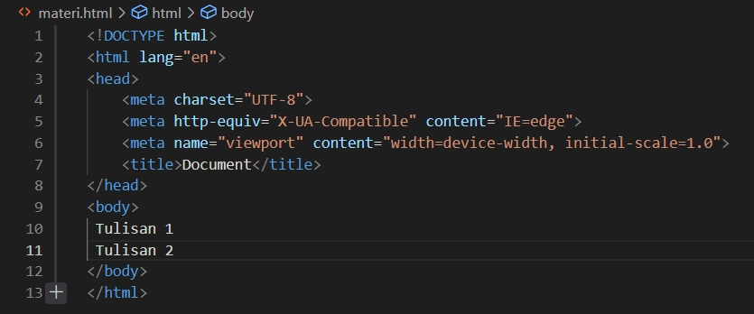
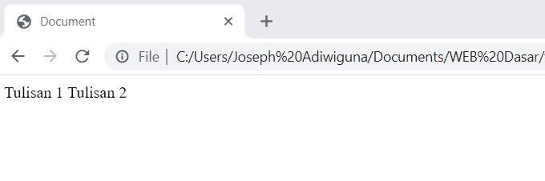
Jika kita tidak menggunakan tag br maka hasil yang akan kita dapatkan akan seperti gambar di bawah
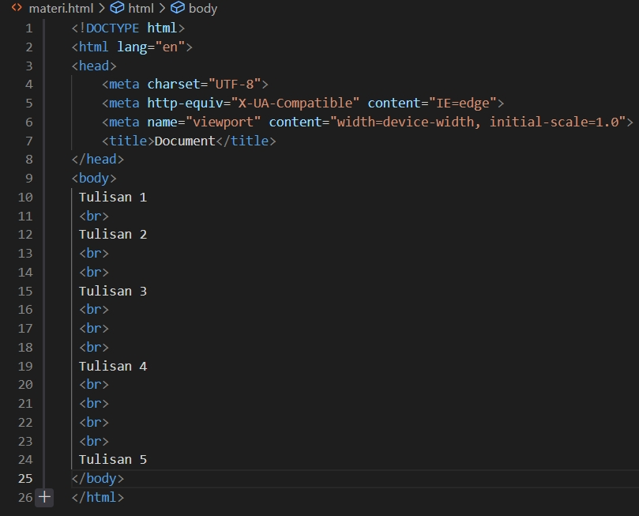
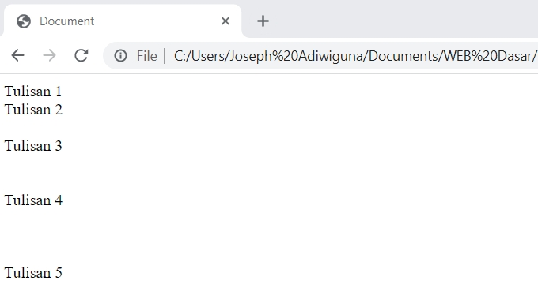
Tetapi jika kita menggunakan tag br maka hasil yang akan kita dapatkan akan seperti gambar dibawah
Tips : ⚠ Tag br dapat digunakan layaknya enter pada keyboard kita
tetapi gunakan tag br pada posisi yang tepat agar enter pada file HTML kita sesuai dengan keinginan kita.
Atribut dan Value
Atribut dan value merupakan sebuah elemen yang diperlukan pada elemen HTML. Atribut berfungsi untuk memperjelas, menambah informasi, dan juga memodifikasi sebuah tag.
Contoh dari atribut adalah bgcolor, align, width, dll.
Value berfungsi sebagai informasi tambahan yang digunakan untuk memberi, membentuk, dan memodifikasi atribut yang sudah kita tulis.
Contoh dari value adalah green, #00ffoo, center, 200px, dll.
Tips : ⚠ Untuk Value warna, kita dapat menggunakan warna dengan tulisan (seperti green, black, dll) atau menggunakan
heksadesimal (#00ff00, #00000, dll).
Warna yang kita gunakan pada value HTML dapat kita pilih melalui color picker sehingga warna yang akan ada pada value HTML menjadi beragam.
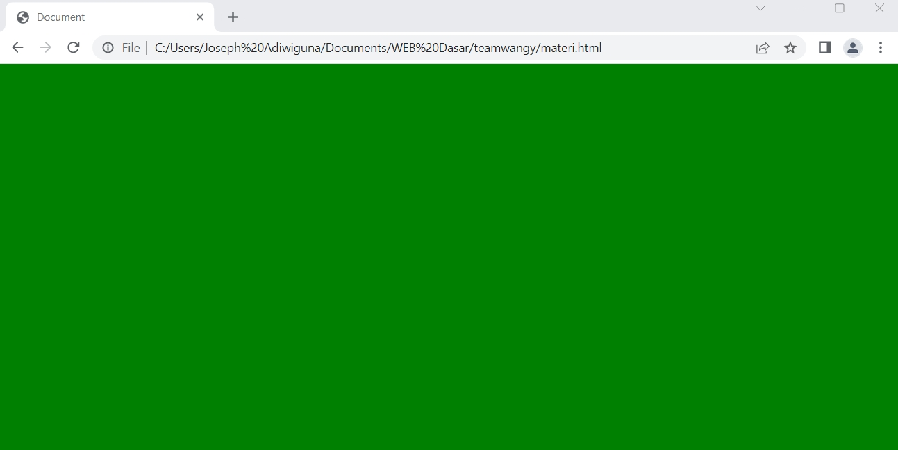
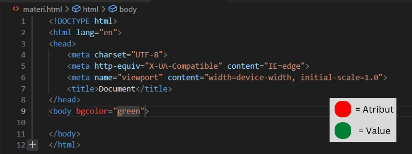
Pada gambar diatas, kita dapat melihat bahwa tag body menggunakan atribut background colour (bgcolor)
dengan value green atau #00ff00 sehingga hasil dari penggunaan
atribut dan value tersebut dapat terlihat pada gambar 6
Tips : ⚠ Saat kita menggunakan Value maka kita harus menggunakan tanda kutip pada awal dan
akhir kalimat agar komputer dapat menerima perintah tersebut. Selain itu juga, Atribut dan Value hanya dapat menerima input
dalam Bahasa Inggris saja sehingga Bahasa lain tidak dapat digunakan pada teks editor.
Tag Catatan (<!-- -->)
Tag catatan merupakan tag yang berfungsi untuk menuliskan keterangan pada sebuah elemen HTML.
Tag ini hanya dapat dilihat pada text editor sehingga saat kita melihat di browser, tulisan yang kita ketik
tidak akan muncul dan hanya elemen HTML saja yang ada pada browser.
Contoh penggunaan tag catatan dapat dilihat di bawah :
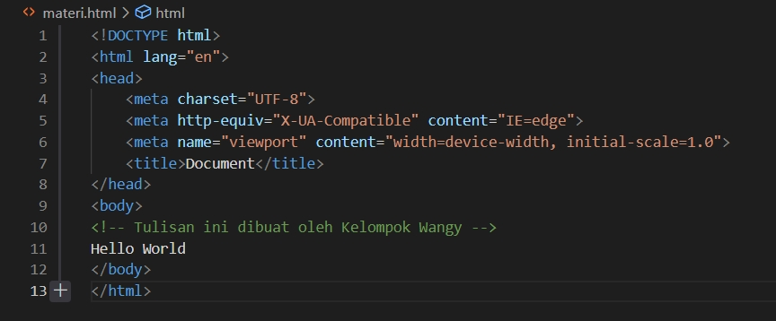
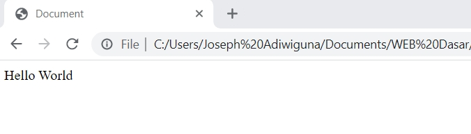
Gambar di atas merupakan contoh penggunaan teks
dimana tulisan "Tulisan ini dibuat oleh Kelompok Wangy" muncul dan hanya tulisan " Hello World" saja yang muncul.
Tips : ⚠ Untuk membuat catatan kita HARUS
menggunakan <!-- --> agar tulisan dikategorikan sebagai comment
Tag Heading (< h_ >)
Tag heading biasanya digunakan untuk membuat judul pada halaman web, tag heading pada HTML terdiri dari 6 tingkatan yaitu yang terdiri dari h1, h2, h3, h4, h5, h6. Tag heading secara default di tampilkan oleh browser dengan huruf tebal (bold), tag heading yang paling besar adalah h1 dan yang paling kecil adalah h6.
Contoh penggunaan tag heading dapat dilihat di bawah :
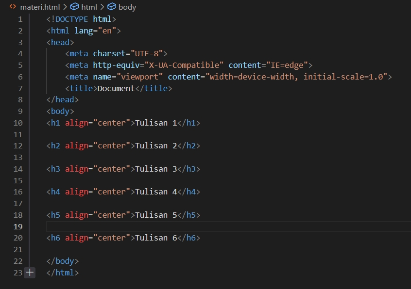
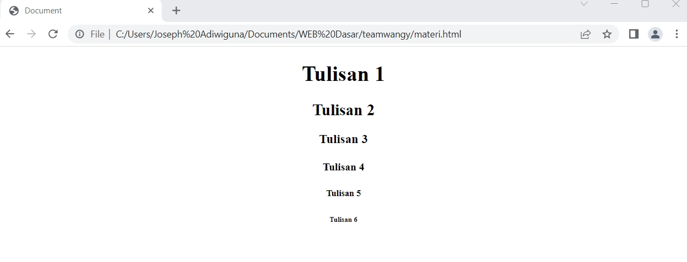
Gambar di atas merupakan macam-macam heading yang ada pada HTML dan
penulisan heading ini menggunakan atribut align dengan value center agar posisi tulisan berada ditengah tetapi terdapat
atribut align lainnya yang dapat membuat posisi teks ditempat yang berbeda
Tips : ⚠ Semakin besar tulisan maka semakin kecil angka yang ada pada tag heading
Tag Paragraph (<p>)
Tag paragraph merupakan tag yang digunakan saat kita menuliskan beberapa kalimat yang membentuk sebuah paragraph.
Kita juga dapat menggunakan tag br untuk menambahkan jarak antar paragraph.
Contoh penggunaan tag paragraph dapat dilihat di bawah :
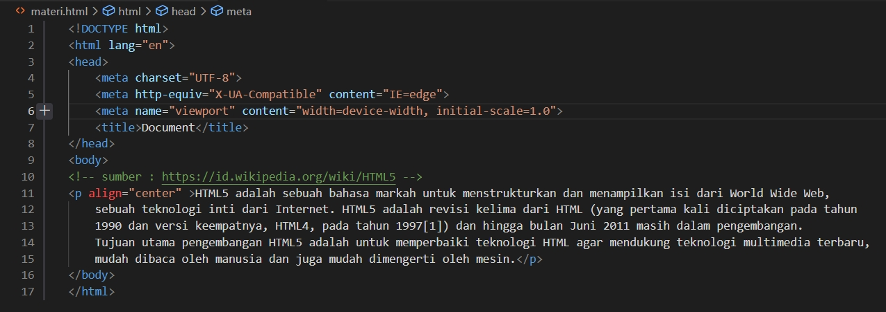
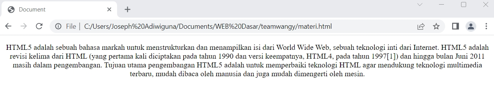
Gambar di atas merupakan contoh penggunaan tag paragraph yang dapat ditulis di HTML. Penulisan paragraph
pada contoh diatas menggunakan atribut align dengan value center agar posisi paragraph berada ditengah tetapi terdapat align lainnya yang membuat
posisi teks ditempat yang berbeda
Tag hr (<hr>)
Tag hr berfungsi untuk memberikan garis/ pemisah pada suatu bagian dengan bagian lainnya.
Tag ini seperti tag br karena tag ini tidak memiliki tag penutup.
Contoh penggunaan tag hr dapat dilihat di bawah :
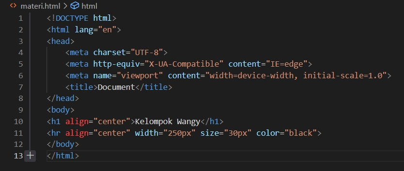
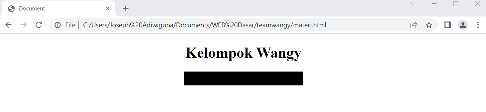
Gambar di atas merupakan contoh penggunaan tag hr di HTML. Penggunaan tag hr di atas menggunakan atribut align dengan value center agar posisi ditengah,
lalu
menggunakan atribut size dengan value 30px agar ukuran hr menjadi lebih besar,
dan menggunakan atribut color dengan value black agar warna menjadi hitam.
Tips : ⚠ Posisi dan besar kecil hr harus diperhatikan agar hr sesuai dengan kemauan kita
Text Formatting
Text Formatting digunakan untuk memberikan penegasan pada sebuah kalimat dalam elemen HTML.
Text formatting yang ada pada HTML yaitu :
- Tag Bold (<b>)
Tag ini berfungsi untuk mempertebal tulisan pada elemen HTML.
- Tag Italic (<i>)
Tag ini berfungsi untuk memiringkan tulisan pada elemen HTML.
- Tag Underline (<u>)
Tag ini berfungsi untuk memberikan garis bawah pada elemen HTML.
- Tag Striketrough (<s>)
Tag ini berfungsi untuk mencoret kalimat pada elemen HTML. (Contoh:Striketrough)
- Tag Big (<big>)
Tag ini berfungsi untuk memperbesar tulisan yang ada pada elemen HTML.
- Tag Small (<small>)
Tag ini berfungsi untuk memperkecil tulisan yang ada pada elemen HTML.
- Tag Subscript (<sub>)
Tag ini berfungsi untuk menulis tulisan kecil dibawah garis text. (Contoh : H 2O)
- Tag Superscript (<sup>)
Tag ini berfungsi untuk menulis tulisan kecil diatas garis text. (Contoh: x2)
Contoh penggunaan Text Formatting dapat dilihat di bawah :
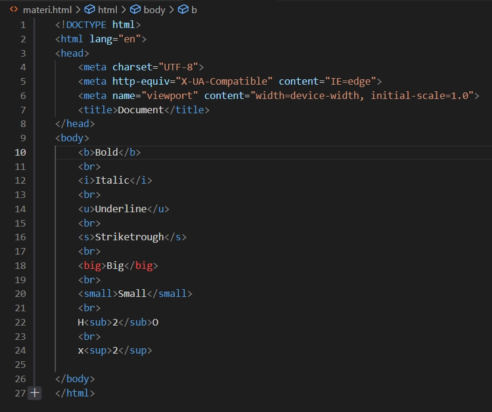
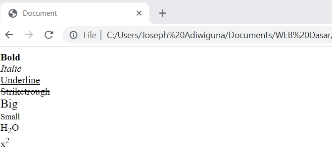
Special Character
Tag ini merupakan tag yang digunakan untuk menampilkan karakter yang tidak ada pada keyboard
Special Character yang ada pada HTML cukup banyak dan dapat kita gunakan sesuai dengan kemauan kita. Berikut merupakan contoh dari beberapa special character yang ada di HTML :
Tag a (<a>)
Tag a merupakan sebuah tag yang berfungsi sebagai hyperlink atau dengan kata lain, tag a merupakan tag yang memungkinkan
kita untuk berpindah secara otomatis dari suatu bagian/suatu halaman website ke bagian/halaman website lainnya.
Untuk memperlihatkan tag a di HTMl, kita dapat menggunakan text sebagai wadah untuk menampung link
yang ada pada tag a.
Tag a memiliki atribut yaitu href. Dalam HTML, terdapat beberapa value untuk href. Value tersebut yaitu:
URL merupakan alamat dari sebuah website dan setiap website memiliki url yang berbeda. URL yang digunakan pada href bisa bersifat relative dan absolut.
URL relative
merupakan URL yang hanya ditulis path-nya saja tanpa domain.
URL absolut adalah URL yang ditulis secara lengkap mulai dari domain dan path-nya.
Untuk penggunaan url, kita dapat menggunakan atribut target sehingga saat kita mengklik link url maka browser akan
melakukan hal yang sesuai dengan sifat value tersebut.
Mari kita lihat gambar dibawah untuk penggunaan url relatif dan url absolut pada tag a
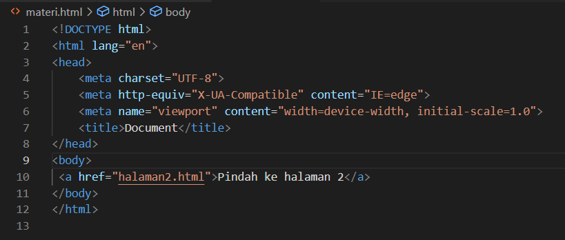
Dari gambar di atas, kita dapat mengetahui bahwa url yang digunakan adalah url relatif dan saat url kita sentuh maka,
text akan berpindah ke halaman website lainnya. Jika kita menggunakan tag a yang sama pada website lain, kita juga dapat
kembali ke website awal kita.
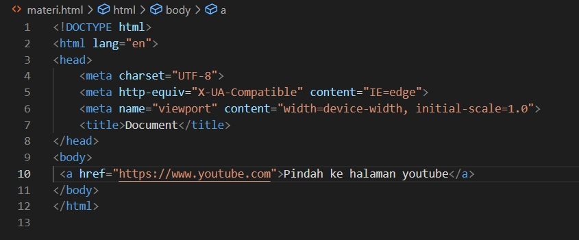
Dari gambar di atas, kita dapat mengetahui bahwa url yang digunakan adalah url absolut dan saat link kita click maka
browser akan mengarahkan kita ke halaman youtube
dan untuk kembali ke halaman website, kita dapat berpindah tab.
Saat kita menggunakan atribut href pada tag a, kita dapat menggunakan alamat email sebagai valuenya tetapi dalam value
tersebut harus ditambahkan “mailto: ” agar
komputer dapat mengerti bahwa kita ingin mengirmkan email ke alamat email
tersebut dan komputer dapat memprosesnya. Mari kita lihat gambar di bawah :
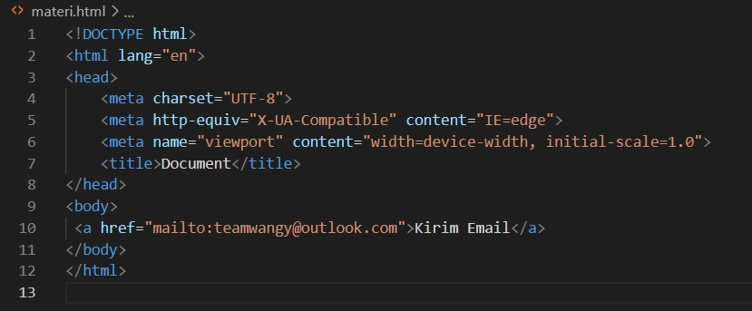
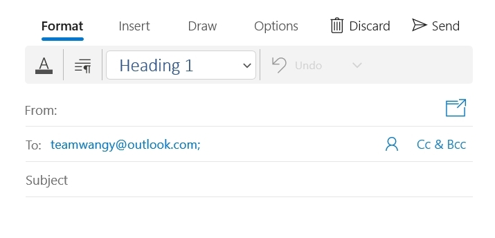
Jika dilihat dari gambar di atas, saat kita menggunakan value alamat email, komputer menerima informasi bahwa kita ingin
mengirimkan email ke alamat email tersebut
sehingga saat kita mengklik email tersebut maka komputer langsung mengarahkan
kita ke pembuatan email dengan alamat email tersebut. Selain itu juga, kita dapat
mengirimkan email ke lebih dari 1
penerima dengan menggunakan tanda koma (,).
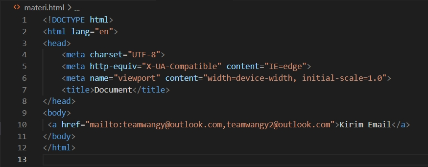
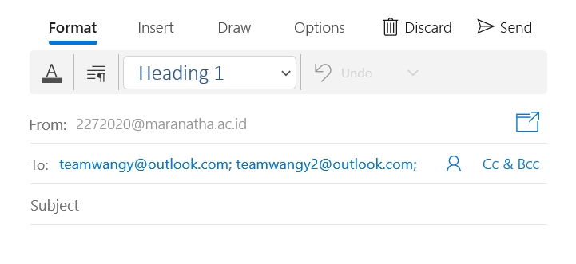
Untuk menuliskan email untuk CC atau BCC secara otomatis, kita dapat menuliskan tanda tanya (?) setelah alamat email yang
telah kita ketik pada href. Untuk email CC, kita
dapat mengetikan CC kemudian gunakan tanda sama dengan (=) lalu alamat
email yang akan menerima CC. Setelah itu, kita ketikan tanda dan (&) agar komputer dapat
mengerti dan berlanjut ke alamat
email untuk BCC. Untuk email BCC, kita dapat mengetikan BCC kemudian gunakan tanda sama dengan (=) lalu alamat email yang akan
menerima BCC.
Untuk contoh penulisan email secara cc atau bcc secara otomatis dapat dilihat pada gambar di bawah :
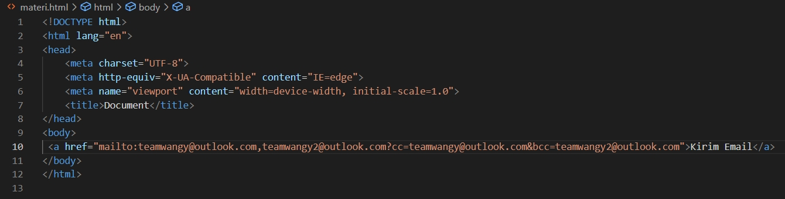
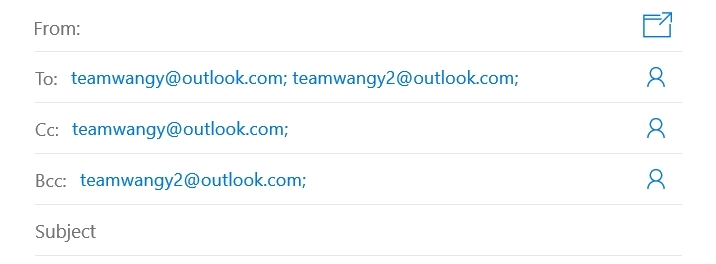
Untuk menuliskan subject dan email secara otomatis , kita dapat menggunakan tanda dan (&) setelah menuliskan email CC dan
BCC tetapi jika kita tidak menggunakan
email CC/BCC, kita dapat menggunakan tanda tanya (?) terlebih dahulu.
Untuk membuat subject email, kita dapat ketikan kata subject kemudian gunakan tanda sama
dengan
(=) lalu ketikan subject dari email kita. Untuk contoh penulisan body email secara otomatis, ada pada gambar di bawah :
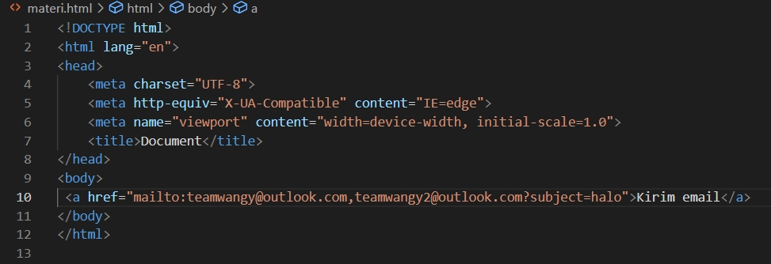
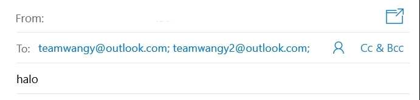
Untuk membuat body email/ isi dari email, kita dapat menggunakan tanda dan (&)
lalu masukan kutip dua (" ") lalu ketikan kata body lalu gunakan tanda sama dengan
(=) kemudian ketikkan isi
email kita apa. Untuk contoh penulisan body email secara otomatis, ada pada gambar di bawah :
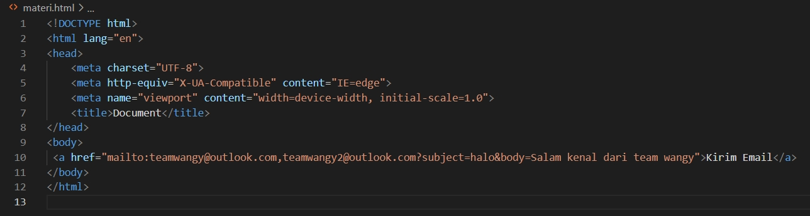
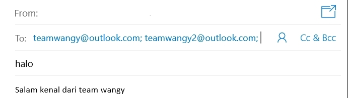
Tag img (<img>)
Tag img berfungsi untuk menampilkan gambar pada halaman website kita.
Untuk menggunakan tag img kita dapat menuliskan tag img lalu masukan atribut src. Atribut src merupakan atribut
yang digunakan untuk mengambil gambar dari file ataupun url. Untuk value dari atribut src merupakan path dari gambar
yang kita miliki ataupun url sebuah gambar. Mari kita lihat contoh gambar di bawah :
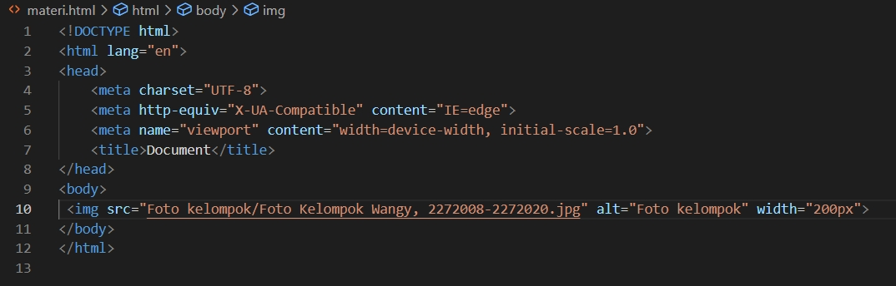
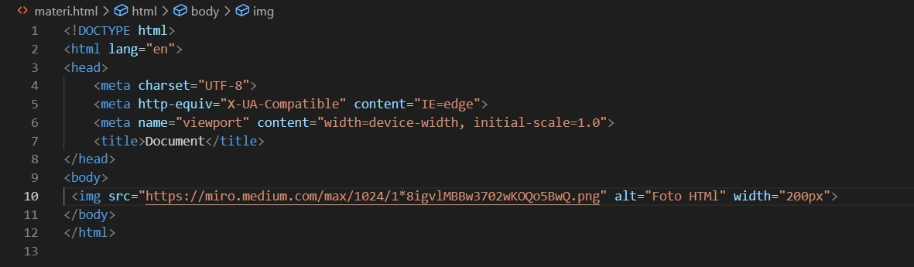
Gambar di atas merupakan penggunaan tag img dengan value src path & URL dari sebuah gambar.
Terdapat beberapa atribut yang dapat digunakan pada tag img. Atribut-atribut tersebut adalah
-
alt
Saat gambar tidak muncul di browser, muncul tulisan/informasi mengenai gambar tersebut.
-
width
Dapat memperbesar/memperkecil lebar gambar yang akan dimasukan.
-
height
Dapat memperbesar/memperkecil tinggi gambar yang akan dimasukan.
-
title
Memberikan informasi tambahan mengenai gambar tersebut.
-
border
Memberikan pembatas/bingkai pada gambar tersebut.
-
hspace
Memberikan jarak dari samping kiri border ke gambar.
-
vspace
Memberikan jarak dari atas border ke gambar.
Iframe (<iframe>)
Iframe merupakan komponen dari file HTML yang memungkinkan Anda menyematkan video, dokumen, dan file lainnya ke dalam
sebuah halaman website.
Untuk membuat iframe, kita dapat menggunakan tag iframe dan gunakan width, height untuk memperbesar iframe serta gunakan
border sebagai pembatas untuk iframe.
Jika kita ingin merubah-rubah iframe yang kita miliki, kita dapat menggunakan atribut name pada tag iframe karena atribut
name merupakan atribut yang mirip seperti id sehingga jika kita mengklik tag a yang ada maka iframe akan berubah mengikuti
tag.
Di bawah ini merupakan contoh dari iframe :
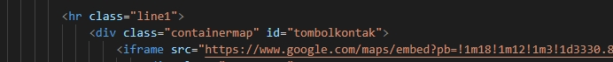
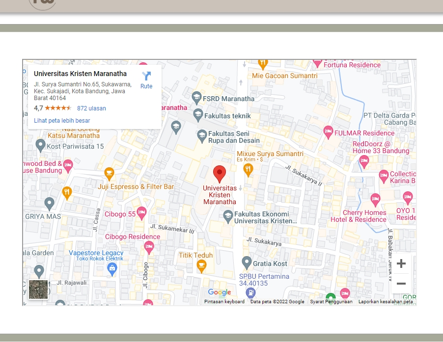
Contact Us